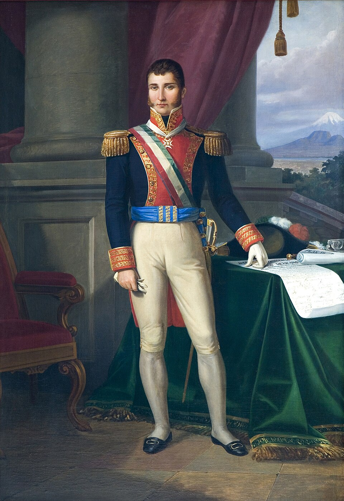

Entre arcos de flores, el Ejército Trigarante entra en la Ciudad de México
Dieciséis mil hombres desfilaron hoy con Iturbide al frente, bajo los tres colores de las garantías: religión, independencia y unión. Se anuncia que mañana se firmará el acta que consuma once años de lucha.

La Ciudad de México vivió hoy la jornada más alegre de que haya memoria. Desde temprano, balcones colgados de sedas, arcos de flores atravesando las calles y un gentío que no cabía en las aceras esperaron la entrada del Ejército Trigarante. A media mañana, dieciséis mil hombres comenzaron a desfilar por las calles enfloradas y, al frente, a caballo, don Agustín de Iturbide, el jefe que ha sabido juntar en un abrazo a los que ayer se mataban. De los balcones llovían flores y vivas; muchos lloraban sin ocultarlo. La ciudad entera vistió los tres colores de las garantías.
Iturbide, que cumple hoy treinta y ocho años, recibió las llaves de la ciudad, y el desfile duró horas: forman en el Trigarante, unidos, los antiguos jefes realistas y los viejos insurgentes que durante una década se persiguieron por montes y caminos. El ejército marcha bajo las tres garantías proclamadas en Iguala: religión, independencia y unión, cifradas en los tres colores de su enseña. Junto al primer jefe se ha visto a generales de todas las banderas de ayer. Se anuncia que mañana se instalará la Junta y se firmará el acta de independencia, que romperá el lazo de tres siglos con la metrópoli.
Lo que hoy se consuma comenzó hace once años y once días, cuando este diario contó la campana que un cura hizo sonar de madrugada en el pueblo de Dolores. Vino luego una guerra larga y cruel que pareció apagarse en los montes del sur. El desenlace llegó por camino inesperado: Iturbide, enviado a combatir a Guerrero, prefirió entenderse con él, y en febrero proclamó en Iguala un plan que ofrecía a todos un lugar en la patria nueva. Provincia tras provincia se adhirió casi sin sangre, y en agosto el propio jefe político superior, don Juan O'Donojú, firmó en Córdoba el reconocimiento.
La ciudad fue hoy un solo festejo. Comerciantes que cerraron sus puertas para salir a ver, señoras que deshojaban rosas desde los balcones, léperos y canónigos confundidos en el mismo vítor. En la catedral se cantó un tedeum solemne. Los soldados, muchos con el uniforme raído de diez años de campaña, recibían abrazos y jarros de agua fresca. Se oyó a viejos insurgentes llorar al ver entrar con honores la causa por la que enterraron a sus hijos. Al caer la tarde hubo iluminaciones, repiques y fuegos de artificio, y en cada esquina alguien leía en voz alta el bando de la jornada.
Este diario deja escrito que hoy nació una nación. Tres siglos fue esta tierra reino de ultramar; desde hoy se pertenece. Los problemas que vienen no son pequeños: un erario exhausto, provincias inmensas, y la pregunta, aún abierta, de qué forma de gobierno vestirá el imperio mexicano. Pero esas dudas son de mañana. Hoy la ciudad que vio entrar tantos ejércitos vio entrar por fin el suyo, y las tres garantías flamearon juntas: la religión de los abuelos, la independencia de los hijos, la unión de todos. Quiera el cielo que lo ganado en once años de armas se sostenga ahora en paz.